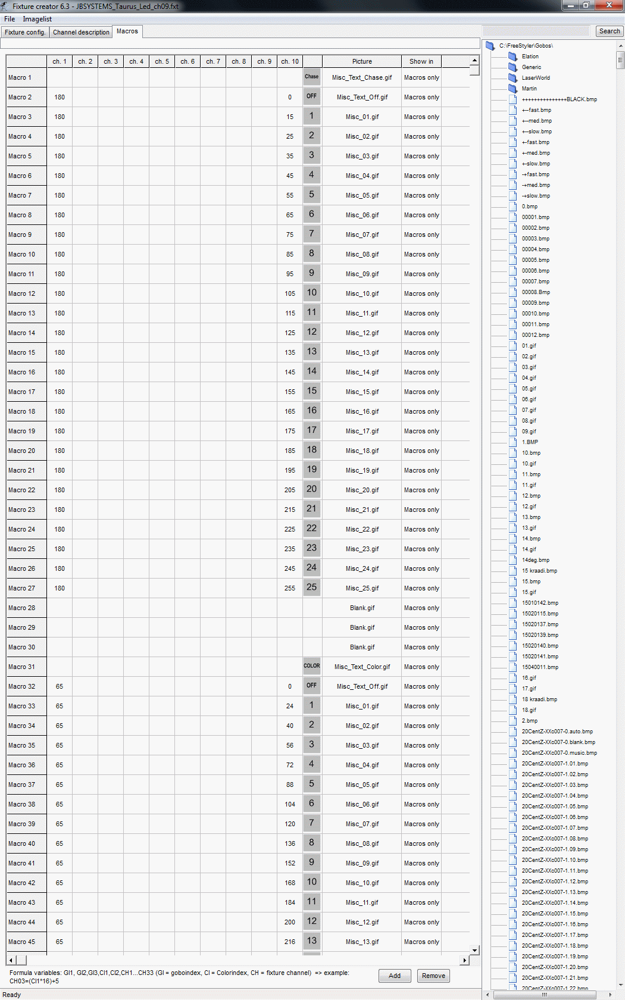
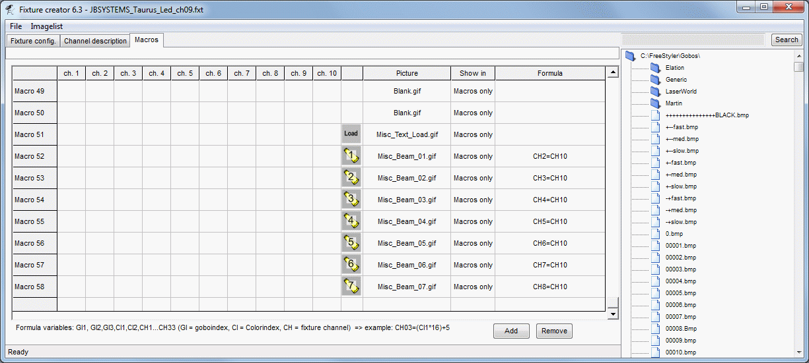

Table of Contents
Using the Formula function.
It is assumed that the reader are familiar with the basics in creating a fixture.
Loading values into various channels.
Using Gobo or Color index
Loading values into various channels.
The target is here to control a fixture with 7 beams which each have a lot of macros.
In this example the JBSYSTEMS Taurus Led are used.
The macros are identical for all 7 beams and can’t be configured individually because there are to be used 50 macros for each beam.
In total this gives 350 macros and the max number of macros are 150.
The basic idea is to set the macro value into one channel and then load from there it into the wanted beam channel.
The fixture is a 9 channel fixture but for this example an extra dummy channel is used to contain the macro set value.
It is not necessary to use this extra dummy channel. One of the beam channels can be use but this have some advantages and some disadvantages.
If Beam 1 channel is used as set channel then it will be possible to see direct what color / chase is selected.
Beam 1 is the last on to be programmed and if manual control is used then Beam 1 will always change when a macro is set.
Beam 1 Set.
Beam 1 copied to Beam X
If Dummy channel is used then the no Beam is change before the change is loaded into the beam.
But it is not possible see the beam change before it is loaded and the fixture occupy an extra channel.
Dummy Set.
Dummy copied to Beam X
The DMX table is 7 identical color / chase tables.
The fixture is a 9 channels and here the “Total” channels are set to 10 so there space for the Dummy Channel.
In the macro table all 50 are filled in.
Depending on channel 1 setting the Beam control will either be Color or Chase so therefore are channel 1 values also set.
Note there are some icon that have no values. This is either used as title or blanks.

The last 7 macros are used to load the value from the dummy channel into wanted beam channel.
The Formula field contains CH2 = CH10 which means that the value from channel 10 is copied into channel 2, (Beam 1)

The fixture control will then look like this.
How does this work.
Press one of the Chase or Color icons.
Then press one of the Beam icons.
Note: For this fixture it is so that all beams will either be in color or chase mode.
It is not possible to have one in chase and one in color.
The last pressed icon determine the mode.
{kind=link}
{kind=link}
{kind=link}
{kind=link}
{kind=link}
{kind=link}
Using Gobo or Color index
The index parameter in formulas is used to link a Gobo or Color icon to a value that can be used in calculations.
It is important to know when the index shifts values for a proper use of the value.
Here a Gobo wheel shown in the image bellow is used. The formula will here be used to shift the shaking speed between slow, med and fast with 3 macro icons.
Defining the Gobos is a bit critical to get the right index value.
It is common to use middle values so the gobo or color wheel is centered.
See Fixture Creator - Tutorial Middle value
Using middle values is in this case okay, but not optimal, to do for the gobos in the static mode but with range with the shaking gobos the index will fail.
Index has a valid range from one icon value to the next icon.
The first gobo has the index value 0.
Example.
Shaking Gobo 4 is no. 12 and as the index starts at 0 then the index value for gobo 4 will be 11.
In the DMX table gobo 4 starts at 88 and this is entered in the gobo wheel configuration.
Gobo 4 starts at 88 and ends one value below the next Gobo icon which here will be 95.
With values in this range the index value will be 11.
If middle value is used then the index will become offset. See error example bellow.
Back to the Shaking speed function.
The Gobo wheel is configured as shown below.
The “Slow” macro and formula is the easiest to do as this is with no offset.
The value distance between the gobos are 8 so this is used as multiplication factor.
This formula then looks like this.
“Slow”, CH07 = GI1*8
Shaking Gobo 5, Index =10
CH07 = 10*8 = 80
Shaking Gobo 4, Index =11
CH07 = 11*8 = 88
Shaking Gobo 3, Index =12
CH07 = 12*8 = 96
For the “Med” macro there is an offset of ca. 4
“Med”, CH07 = (GI1*8) + 4
Shaking Gobo 4, Index =11
CH07 = (11*8) + 4 = 92
For the “Fast” macro there is an offset of 7
“Fast”, CH07 = (GI1*8) + 7
Shaking Gobo 4, Index =11
CH07 = (11*8) + 7 = 95
In the macro tab it looks like below.
In FreeStyler it looks like this.
How does it work.
“Press” one of the shaking gobos and the gobo shifts to the selected gobo which will be shaking slow.
“Press” one of the speed macros and the speed will change to the selected.
Adjust the gobo fader. (The gobo shifts and thereby the index)
Press the wanted speed.
There is however some things to take into account.
The speed macros only work in the gobo range where the shaking gobos are defined.
The static gobos are here, on purpose, defined as mid values to demonstrate this problem.
If one of the static gobos are selected and then the speed macro “Med” or “Fast” is pressed, then the gobo will shift to the next gobo because the value calculated by the formula correspond to a value for the next gobo.
Also if the index don’t match the icon then or the distance between the icon isn’t the for all wanted icons it gets tricky to get it working.
Here an example where the gobos are defined with middle values which will return a wrong index value in some cases.
Formulas can also be a bit difficult to figure out if math isn’t the top skill.
But there are some tricks that can be handy and help creating the formula.
Use a macro and a dummy channel.
CH01 = GI1
When the gobo faders are moved and the macro afterwards pressed then the index value is shown on channel 1 as a DMX value.
Then add the factors on one by one and see that they behave.
Example add the multiplication.
Above the factor was 8 and see that the value on channel 1 steps with the same step size as in the DMX table.
If the step size is okay but the values are offset then add an offset value.
Work step by step and it is not so complicated that a higher degree of math is needed.
More to come
{kind=link}
{kind=link}
{kind=link}
{kind=link}
{kind=link}
{kind=link}